![]()
%%{init: {'themeVariables': {'textColor': '#ffffff'}}}%%
sequenceDiagram
box DarkOrange Fundamental
participant Logic
participant Mathematics
end
box Central
participant Physics
participant Chemistry
end
box DarkOrange Applied
participant Computer Science
participant Biology
participant Engineering
end
rect rgb(255, 255, 255)
Logic->>Mathematics: Logicism posits that mathematical truths<br/>are logical truths
end
rect rgb(255, 255, 255)
Mathematics->>Physics: Physical phenomena<br/>a result of mathematical consistency
end
rect rgb(255, 255, 255)
Physics->>Chemistry: Chemistry arises from physical interactions<br/>and structures
end
rect rgb(255, 255, 255)
Physics->>Computer Science: Computation a direct, more complex<br/>progression of physics.
end
rect rgb(255, 255, 255)
Chemistry->>Biology: Biology a direct, more complex<br/>progression of chemistry
end
rect rgb(255, 255, 255)
Engineering->>Physics: Engineering arises from and affects<br/>our understanding of the central sciences and<br/>the rest of the applied sciences
end
rect rgb(255, 255, 255)
Chemistry->>Logic: The central sciences act as a checker for the<br/>findings of the applied sciences and depend on<br/>maths and logic to verify empirical findings
end

1 Taking the First Step
It was June of 2022 when I first decided to delve into mathematics and computation at 22 years of age.
I began my learning journey with the programming language Swift, which is mainly used to develop for Apple platforms. Quite an unintuitive choice given that Python and R are the languages most used for computational biology, which is the field I’m interested in, but I thought that Swift Playgrounds, an app designed by Apple to teach people how to code, looked like a great interactive tool that would make programming concepts stick. Not too long after, I signed up for Angela Yu’s Udemy course to learn Swift app development.
As a medical laboratory scientist whose research will mostly involve large amounts of biological data that needs to be analyzed in all sorts of ways, I was left with very little room to keep dodging this undertaking, especially since it was my intention from the beginning to become a researcher, as opposed to a clinical lab technician doing routine work.
2 Emerging Fields
This was induced by the fact that biology and medicine have been turning into computational fields of sorts due to the advent of high throughput sequencing and advanced simulation capabilities which made it even thinkable to statistically model biological systems 1.
A prime example of this is the Metropolis-Hastings algorithm, a Markov chain Monte Carlo method, which made computational Bayesian inference tractable by enabling sampling from complex posterior distributions.
Biology provides a wealth of high-dimensional information unlike any other of the natural sciences while medicine benefits from having room to make many trials and errors before applying on the living. Statistical methods applied through computation and code are shaping up to be the future of those fields, more so than they already are.
3 A Dilemma and a Dichotomy
A couple of months after I began, in November of 2022, the service ChatGPT was launched, and managed to become the fastest-growing consumer application in history, with nearly all of the news outlets claiming how impactful it could be as a technological advancement, which I happened to agree with. Conversely, many people touted it as the beginning of a great replacement of humans or their jobs at least, with specialties involving lots of text, including code, being at the forefront.
So there I was, the guy who spent the last 6 months learning to code, being told that I wasted my time doing so. But did I? I had no way of knowing, especially since I had yet to utilize my newly-attained knowledge and skills. This made me undecided on whether I should halt my learning-to-code journey, at least until things became more lucid. However, I didn’t have to wait.
In this post, I will lay out the reasoning as to why I thought it was a good idea for me to keep going forward no matter what else was going on in the world, and why this opinion was backed by a dichotomy of possible futures, the cheerful and the pessimistic, making me even more resolute in my decision.
4 Bright Times Ahead
Exponential Growth
At least some people will argue, including most if not all of the CEOs of the companies heavily invested in AI, that machine learning will be as revolutionary as the computer and internet, with Google’s CEO Sundar Pichai even claiming it is ‘more profound than fire and electricity’! 2 If that is to be true, then we as humans have quite undermined how much computation as a concept is ingrained into existence.
Think about it, mathematics and logic are both considered formal sciences, with the difference being from the natural sciences is that formal sciences are a priori, focusing more on abstraction and deductive reasoning, whereas natural sciences are a posteriori, focusing more on application and inductive reasoning. I assume that if you ask most people to provide a heuristic, mental model of how these sciences are layered, they would give you something like the following:
Math and logic at the fundamental level, on top of it lies physics which argues from first principles and chemistry which is a complication of physics, and with the rest of the natural sciences and computation layered on top of it as being dependent on physical interactions. This is a mostly accurate mental model, but what it fails to convey is the categorization of computer science as a formal science alongside mathematics and logic, and how central it could be as a tool, albeit a more applicative one than abstract, to understanding all of existence, just like mathematics and logic are.
This could mean, at least in theory, that most humans doing any kind of intellectual work in the future, will have to have some understanding of computational concepts to arrive at certain desired conclusions. In contrast, compare the previous mental model to the following one:
%%{init: {'themeVariables': {'textColor': '#ffffff'}}}%%
sequenceDiagram
box DarkOrange Formal
participant Logic
participant Mathematics
participant Computer Science
end
box Empirical
participant Physics
participant Chemistry
participant Biology
participant Engineering
end
rect rgb(255, 255, 255)
Logic->>Mathematics: Logic provides rules of consistency for formal systems.<br/>Mathematics builds abstract structures within those rules<br/>and, in turn, develops new kinds of logic
end
rect rgb(255, 255, 255)
Mathematics->>Computer Science: Counting systems including binary and ternary<br/>can encapsulate mathematical logic and laws of<br/>thought, providing a systematic way of<br/>describing mathematical/logical properties.
end
rect rgb(255, 255, 255)
Computer Science->>Engineering: Computers, both classical and quantum,<br/>can be used to apply logic and maths to all of<br/>the empirical sciences.
end
rect rgb(255, 255, 255)
Engineering->>Logic: The empirical sciences relay feedback to their<br/>constituents, including other empirical and all of<br/>the formal sciences.
end
You’ll notice that both models provide a somewhat reasonable feedback network between the different fields of knowledge. What the latter model achieves better though is highlighting how computer science sits a level below and not on the same level as the empirical sciences. This makes it less of an adjacent field and more of a constituent of other fields. Yes, a huge side of it is applied and empirical, but its essence is theoretical.
Assuming that machine learning does in fact become as influential and revolutionary as some claim it to be, then it would position those who are capable of directly influencing it as the pioneers of fields where it ends up being utilized.
A Mutual Language
As it stands, machine learning models suffer from a plethora of problems related to how they learn, what data they’re trained on and how complex is the feedback mechanism for the model. These problems include but are not limited to bias, hallucinations, model/mode collapse and catastrophic interference.
Most of these errors can only be sufficiently addressed by tuning the model itself, as opposed to communicating linguistically with the chat agent hoping that modifying words would garner better results in what is known as prompt engineering. To achieve this, one has to be knowledgeable with the inner workings of the model, including the maths and computation behind it.
This is similar to two doctors, one who tells you that you have an infection because he placed their hands on your forehead and concluded so from your fever, and another who reads the results of your complete blood count to realize you had elevated eosinophil levels which reduces the possibilities for the cause of fever to either allergy or parasitic infections. Which doctor would you trust to address your pro? This mirrors the limitations of prompt engineering versus direct model tuning. Looking at the code or math behind the model is equivalent to having a blood test of a patient.
Irreducible Complexity
Given that one day we might end up with a highly intelligent machine learning agent, be it artificial general intelligence (AGI) or artificial super intelligence (ASI), the fact still remains that no matter how intelligent it is, it will still be limited both by compute and algorithms, just like we are limited by our memories and attention spans.
When thinking about visiting other stars and galaxies, often the first thing to come to mind is our lack of a near-speed-of-light vehicle as a means of transportation to be able to get us there in a lifetime. What is equally important is how our biology will handle such speeds, which in my opinion will prove to future generations a bigger hurdle than creating spaceships that travel as fast as needed. Also important is how spacetime will prohibit meaningful communication of findings after each space trip, since time dilation dictates the galactic traveler will return to a world thousands of years older than it were when their decade-long trip had begun. Similarly, AI’s intelligence is and will most likely remain bounded by compute and algorithms, much like our biology limits cosmic exploration.
For artificial intelligence, especially natural language processing models, the crux of the argument is no longer whether they could be prevented from creating nonsensical ideas, but whether their algorithmic complexity can successfully utilize reduced non-linguistic ideas like three-dimensional structures, networks…etc and whether there is enough compute that can be made available for it to apply this algorithmic complexity, and in the event that it resorts to approximation to alleviate its lack of resources, for example, by employing or coming up with algorithms like the aforementioned Metropolis-Hastings algorithm above, then how capable is that of replacing human intuition and thought which is already primed for understanding these structures as they are without having to reduce them to gain an understanding of them?
Reductio ad absurdum (reduction to absurdity) is a favorite thought exercise of mine to arrive at such conclusions. When people say AI will ‘replace’ us, it is a good idea to fast forward to the future, and I’m talking thousands or perhaps millions of years, to realize how far we’ll still be behind our aspirations even with AI’s assistance. Consider these examples:
• Type 1 civilization -a civilization capable of harnessing planetary energy- on the Kardashev Scale: we’ll need large-scale manufacturing on a level not seen before, which might be possible only through robot and AI utilization, in what is known as automation.
• A super suit you wear all day that cleans you and itself and attaches a highly effective bandaid to your wounds/burns that heals them instantly, which also happens to have a built in heater and cooler: we’ll need huge leaps in fiber-, bio-, tissue-, mechanical- and other engineering fields to get our super suit which might only be possible with careful study and experimentation heavily aided by computation.
• Flying cars: We’ll need safety measures for the flying cars, possibly achieved with the help of AI but not depending on it, as you wouldn’t rely on ‘vibe coding’ for people’s safety. Those safety measures could be a natural progression from ones created to protect us from drones.
You get the point. For all of that and else, we’ll need code.
Individual Idiosyncrasy
Another closely related topic to the complexity of the world, is the complexity of our brains, which are fundamentally different from computers in how they make sense of and experience things, namely their qualia.
Take something like optical illusions for example. To a computer, images and videos that we consider to be trippy or creepy are a bunch of pixels that are stationary and fixed in place.
This means that while all processing units in every computer throughout the world will process the image exactly the same way given the same algorithm, human eyes will see it differently. Not only that, but it might be the case that every single human views it in a way unique from all others 3, meaning that an image can be seen one way by a computer algorithm, but more than eight billion different ways by humans. This discrepancy in perspective should in theory entail differences in insight and how humans arrive at conclusions even compared to an artificial super-intelligence, and the main way to hone this perspective is by making sure it can derive insight from a knowledge base, one which preferably includes coding and all that comes with learning it.
Someone might make a case for something like least significant bit (LSB) steganography being a way for AI to understand how optical illusions work in our brains, but that is a totally separate thing from what I’m arguing for here. A machine learning model can examine sheet music, or listen to a video that teaches you how to do a handstand, and try to replicate both in a different improvised style of its own, but it will never get to experience the timbre of the instruments that’ll play the music the way a human will, nor will it struggle with controlling its body with micro adjustments to achieve a physical feat. Similarly, it can only be taught the characteristics of an image that causes an optical illusion, but it will never get to be the first one to experience a new one, and will have to wait for us to put into words what that set of pixels/text/soundwaves feels to us.
Its experience will keep being brought closer to ours, for example, using reinforcement learning to train a robot to backflip correctly, but it won’t learn from it the way a human learning the same feat will, for example, by controlling his racing thoughts from a problem he had and clearing his mind up to focus on the task at hand.
5 Doom and Gloom
Binary in the Bin
In the event that mid and high level programming languages fade out of view like low level ones did, such as assembly and machine code, and Nvidia’s CEO Jensen Huang’s vision of coder-less future where anyone can prompt engineer their way into fully understanding and applying what needs to be done for their upcoming task 4, then there would still be benefits for having learnt how to code.
One group that was seemingly being threatened by AI were musicians and composers. Multiple instances were popping up of AI composing in the style of Bach, or completing Beethoven’s unfinished 10th Symphony. Even if composers were left obsolete by AI’s recently acquired musical taste, the fact remains that the benefits of learning music will not be taken away by AI. Musicians who started learning music at a young age have a larger corpus callosum in the brain than their non-musician counterparts 5. There are also things we can’t quantitatively measure, such as the mental impact a life full of music had on their persona.
The same is true, and perhaps even more true, for code. It is a highly transferable skill given that we deal with logic, text, maths..etc nearly all-day, everyday. Making your code more neat, coming up with your own solution to problems, having your ‘Aha!’ moment after struggling with a software architecture problem are all things that shape who you are, develop your analytical thinking and problem solving, and impact how you see a potential post-AI, code-less world 6 7.
Full on Automation
Threat to coding aside, numerous other professions (collar-agnostic) have felt the heat from AI, with nearly everyone outside of sports claiming they could be replaced by it at one point or another. This is especially true when you see how widespread robots have become in all facets of life.
Assuming that will be our future, then manipulating these robots and their software which will mostly be based on AI might be the job of the future. Specialists in each field will be required to ‘know their way’ within code to survive the upcoming replacement. This has been true for a while for lots of professions. A mechanical engineer has to learn how to utilize SolidWorks for his mechanical designs, an architect Revit, and an artist Blender.
In my own profession of medical laboratory sciences, a lab technician was expected to take a blood sample, make a blood smear out of it, sit on the microscope for hours to perform a blood count which requires tens of minutes per sample, all now replaced by complete blood count (CBC) systems that can quantify multiple samples with higher accuracy simultaneously.
Microbiological identification and susceptibility testing required plating the bacteria and adding antibiotics to it on a Petri dish and waiting for no less than a day for results to come out, now all done with a VITEK automated system that can reduce turnaround times to mere hours.
Point is, what can be done within a field expands over time, and so do the tools required to navigate that field. There are two choices in front of people working within those fields: either watch by and use their equivalent of a pencil for drawing a blueprint, which is what they’ve always known, or ride the wave and begin utilizing whatever is most suitable to achieve the task at hand.
Stopping Skynet
I must address the most grim of possibilities, which is that of a technological singularity, an artificial intelligence that becomes destructive, reckless or develops revulsion to humans, in the spirit of exploring the other side of absurdity from my reductio ad absurdum argument earlier.
Here we have to ask one question: if AI ends up becoming our worst invention yet, and ends up causing lots of damage, what would the character and the knowledge of the person/group who brought it back to its senses or stopped it look like? What type of arguments will be needed to communicate with it? I’d wager that deep understanding of the mathematical models underpinning it and the code it bases its decisions upon including any hard boundaries will be attributes of this person/group.
Better yet, what knowledge would AI ethicists need to prevent such an AI from ever becoming a reality? Again, I think the answer is people with the attributes above.
6 Analysis paralysis
The goal of this post was to mainly highlight how difficult a decision can be to make, whether it’s learning to code or otherwise, when the course of action can be so non-controversial within the scope of two opposing worldviews.
Utilize mental models of systems and argumentation tools alongside examining patterns from history that can be insightful as to what position you’re currently in, and you’re more than likely to make a reasonable decision.
7 Taking the Next Step
Lessons from this post can be expanded to anything you’re thinking about learning. The same rules apply: it might or might not be useful, but if it’s ubiquitous, mainstream, insightful, transferable and workable, then don’t stress too much about wasting time on it.
“Learning is the only thing the mind never exhausts, never fears and never regrets.”
-Leonardo da Vinci
I think this quote summarizes everything well. Learn to exhaust all possibilities. Learn to fear ignorance and untruths. Learn to regret not having done. Learn.
What’s your take on learning to code in an AI-driven world? Share your stories or thoughts in the comments below!
Footnotes
There are numerous papers that talk about this, here are some of them: All Biology is Computational Biology, Mathematics Is Biology’s Next Microscope, Only Better; Biology Is Mathematics’ Next Physics, Only Better↩︎
Google CEO Sees AI as More Profound Than Fire, Electricity - Bloomberg Television↩︎
A Conversation with the Founder of NVIDIA: Who Will Shape the Future of AI? - World Governments Summit↩︎
Is Learning Computer Programming Associated with Developing Thinking Skills?↩︎
The Cognitive Benefits of Learning Computer Programming: A Meta-Analysis of Transfer Effects↩︎
Citation
BibTeX citation:
@online{aldawood2025,
author = {Aldawood, Ammar},
title = {Why {AI} {Didn’t} {Stop} {Me} {From} {Learning} to {Code}},
date = {2025-09-14},
url = {https://ammaraldawood.com/blog/posts/2025-09-14},
langid = {en}
}
For attribution, please cite this work as:
Aldawood, Ammar. 2025. “Why AI Didn’t Stop Me From Learning to
Code.” September 14, 2025. https://ammaraldawood.com/blog/posts/2025-09-14.